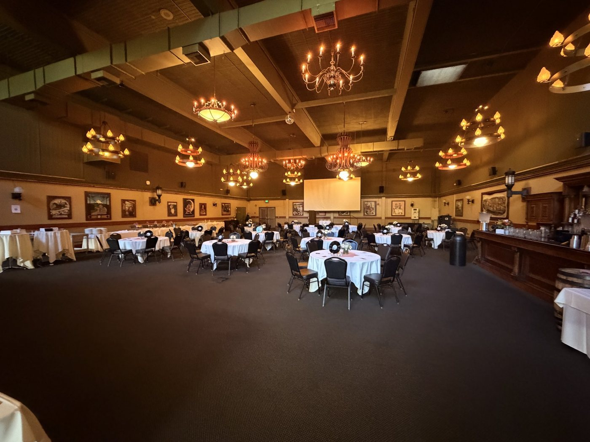
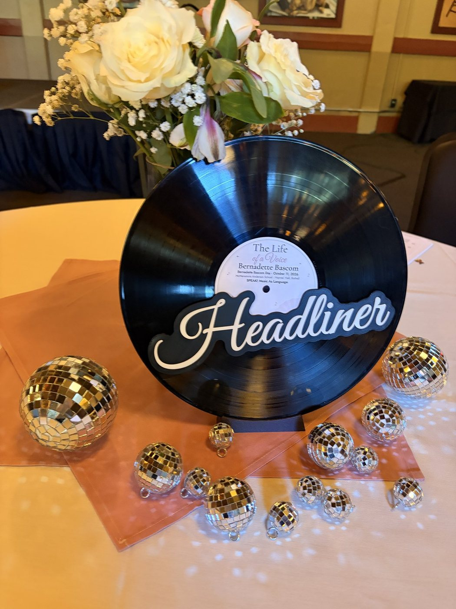
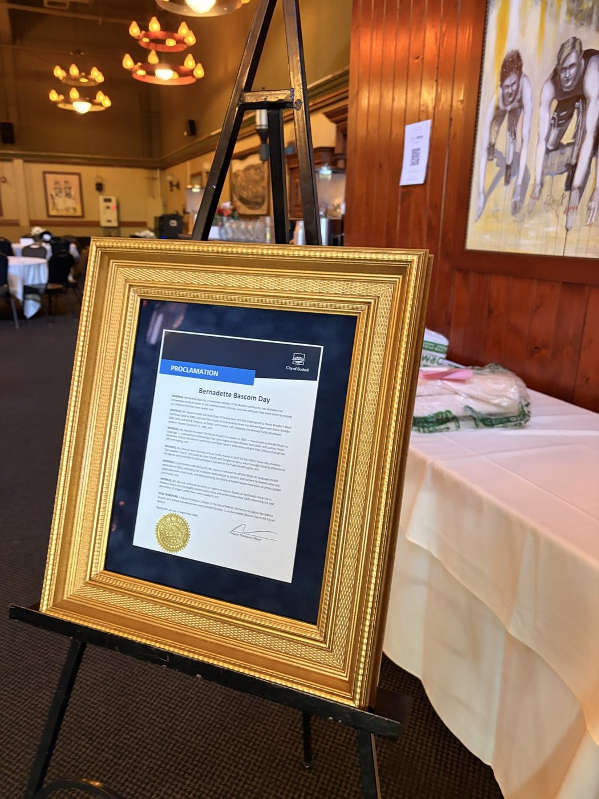
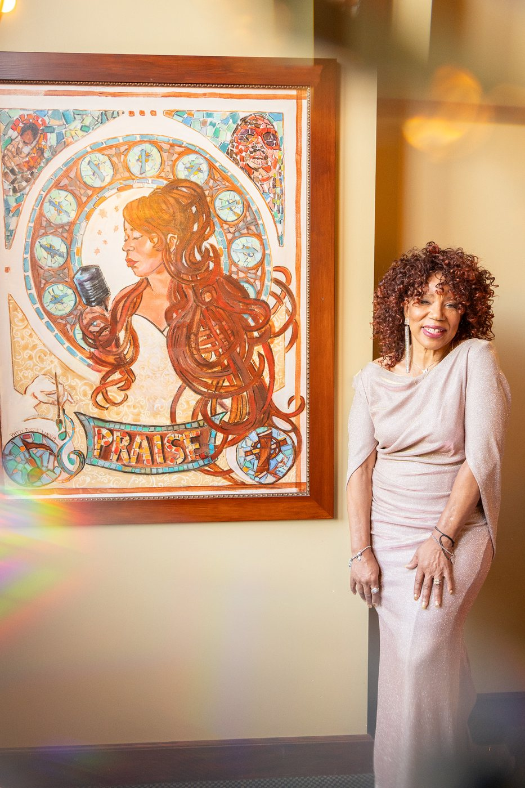

Thank you to the donors, artists, speakers, performers, businesses, volunteers, families, and friends
who supported The Life of a Voice. Your generosity and belief in Bernadette’s work
help make room for every voice.
The Evening, in Pictures
From the Night

Haynes’ Hall, set and waiting.
Photo by JLD Imagery

Every table took its name from the music.
Photo by JLD Imagery

The Bernadette Bascom Day proclamation, on display.
Photo by JLD Imagery

Bernadette with the PRAISE! portrait.
Photo by JLD Imagery
Sharol. A custom multi course dinner for six, prepared in your home.
The Room That Filled the House
Our Supporters
✦ ✦ ✦
Featured Supporters
Katie & Marti, The Franklins ✦
Mike & Kerry, The McCarters ✦
Rekha Nair ✦
Lin Sung Chiang
Soloists
Mark Howley ✦
Mike & Leslie Foley
Harmony
Emily Larsen ✦
Micah Larsen ✦
Ailisa Newhall ✦
Nancy Kaye Talbott ✦
Lauri Whims ✦
Anita Y. White
Student Seat Donors
Edward Hellard ✦
Stanford Franklin ✦
Birgit Hindman ✦
Leanette Roxann Russo ✦
Singleton Wyche
Thank you for donating seats so students could celebrate with us.
Donor Honor Roll
James M. Adair ✦
Shirley Ayres ✦
June Bigelow ✦
Sally Ann Cassidy ✦
Richard Fade ✦
Lynne Hall ✦
Bonnie Hughes ✦
Dianna Jourdan ✦
Margo Leiter ✦
Jo Levin ✦
Robert Liebreich ✦
Doug Long ✦
Rourke O’Brien ✦
Richard Post ✦
Sandy Salz ✦
Duncan Smith ✦
Audrey Stokes
To our donors who could not join us: thank you for your generosity, your commitment to our mission,
and your belief in Bernadette’s work.
On Stage, October 11
Speakers & Performers
✦ ✦ ✦
Bernadette Bascom
Honoree, founder of SPEAK! Music As Language, and performer.
Mike McCarter
The Welcome and the Why.
Christina Gonzales
The Where, on the connection to the Secondary Academy of Success and the Music Project.
Rekha Nair
The How and the What, on the SPEAK! app’s development and what comes next.